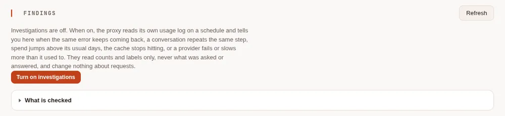
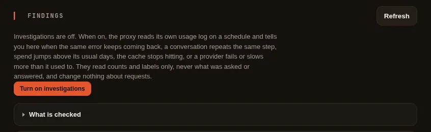
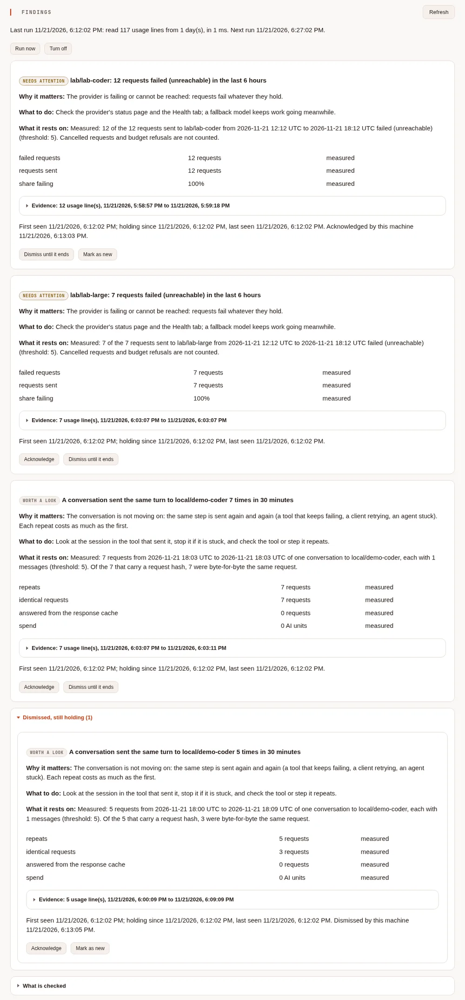
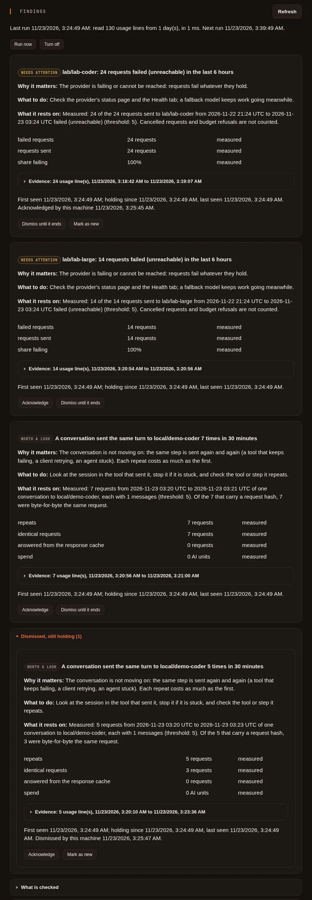
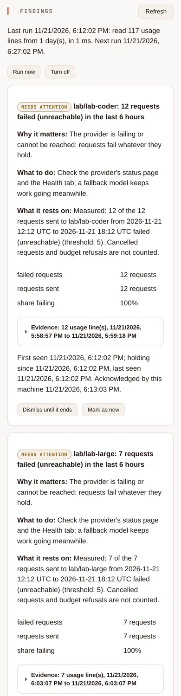
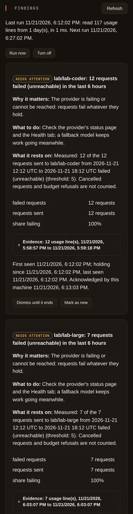

Cost & usageWatch it9 min read
Investigations #
On this page
Investigations are checks the proxy runs over its own usage log on a schedule. They tell you when the same error keeps coming back, when a conversation keeps sending the same step, when spend jumps well above its usual days, when the cache stops hitting the way it did, and when a provider fails or slows more than it used to. Each finding says what happened, why it matters, what to do, and exactly what it rests on.
They are off until you turn them on. With them off, nothing runs and nothing changes on the setup page beyond one short card on the Health page.
In plain words #
The usage log already holds one line per request: when, which model and account, whether it failed and how, how many tokens, how much came from the cache, what it cost. Reading it by hand to notice a pattern is slow. Investigations do that reading for you, every 15 minutes by default, and keep a short list of findings.
A finding is a sentence such as "anthropic/claude-sonnet: 12 requests failed (rate limited) in the last 6 hours" or "Spend of person ana is 5 times its usual day". Under it:
- Why it matters, in plain words.
- What to do about it.
- What it rests on: the time window, the counts, and what they were compared with. Every figure is marked measured (read from the usage log) or estimated (a list-price cost).
- Evidence: which usage lines matched (their request ids, conversations and sessions) and a usage filter that lists them.
You can acknowledge a finding (you have seen it; it stays on the list but no longer lights the dot beside Health in the sidebar) or dismiss it (folded away under Dismissed, still holding until it stops holding; if it comes back later, it is shown again).
To turn them on:
- Open the setup page, the Health page, and find Findings.
- Press Turn on investigations.


The first run happens within a minute. Or set investigations: enabled: on in config.yaml. The schedule and every
threshold are under the card too, in the fold Investigation thresholds, or in config.yaml.
Investigations only read. They never change, slow, reroute or refuse a request. They read counts and labels, never what was asked or answered.
What is checked #
Each check compares like with like, for one subject at a time: a model of one account, a person, a team, a client. The thresholds below are the defaults; every one can be changed (see The settings).
Recurring errors. Five or more requests to one model failing with the same kind of error (rate limited, quota exhausted, not authorised, request too large, server error and so on) within 6 hours. Requests the client cancelled and requests a budget refused are not counted, as in the error-rate alert. A finding is marked as needing attention when half or more of that model's requests in the window failed this way. Requests for a model no account serves are one finding together, whatever names they asked for.
Loops. One conversation (or, without a conversation id, one session) sending the same turn to the same model five or more times within 30 minutes: the number of messages does not grow, so the conversation is not moving on. The finding says how many of the repeats were byte-for-byte the same request, how many the response cache answered, and what they spent. The separate steps of a Copilot Fusion run are not a loop, and neither is a conversation whose requests keep growing.
Cost spikes. A person's, team's, model's or account's spend over the last 24 complete hours at 3 times its average day, or more, over the 7 days before (a day with no requests at all, from anyone, is left out of the average), and at least 5 AI units. Spend is counted as the budgets count it: failed requests and answers from the response cache are left out. Where a subject has no AI units, its estimated list-price cost in US dollars is used instead (at least US$5), and the finding says it is an estimate.
Cache regressions. The share of input read from the provider's cache, for one model or one client, falling by 20 points or more against the 7 days before (at least 200,000 input tokens on each side), counted as the Cache page counts its hit rate. And the share of requests the response cache answered, for one model, falling by 10 points or more (at least 50 requests on each side).
Provider health. An account's failure rate over the last 24 hours rising by 10 points or more against the 7 days before, and its median time to the first token of streamed answers at 2 times or more of what it was, and at least one second (at least 20 requests on each side).
The checks that compare with earlier days need history: at least three of the days before must hold requests, and a subject needs at least three of them to be judged. Until then the check says it was not judged, and why, rather than reporting nothing.
Where you see them #
On the setup page: the Health page, Findings. A red dot beside Health in the sidebar means a finding is open and nobody has acknowledged it yet. Each finding shows its severity, what, why, what to do, its figures and its evidence. What is checked lists each check with its thresholds and whether it could be judged at the last run. Run now runs the checks at once (at most once every 30 seconds).
![The Findings card after its first run: Last run, Run now and Turn off; two findings Needs attention (lab/lab-coder: 12 requests failed, unreachable; lab/lab-large: 7) and two Worth a look (a conversation sent the same turn to local/demo-coder 7 times, and 5 times), each with why it matters, what to do, what it rests on (measured, with its threshold), its figures, and the first one's evidence opened: request ids, conversations, the session, the usage filter and the maple-proxy usage query command that lists its lines](../img/docs/setup-findings-light.webp)
![The Findings card after its first run: Last run, Run now and Turn off; two findings Needs attention (lab/lab-coder: 12 requests failed, unreachable; lab/lab-large: 7) and two Worth a look (a conversation sent the same turn to local/demo-coder 7 times, and 5 times), each with why it matters, what to do, what it rests on (measured, with its threshold), its figures, and the first one's evidence opened: request ids, conversations, the session, the usage filter and the maple-proxy usage query command that lists its lines](../img/docs/setup-findings-dark.webp)




In a terminal:
maple-proxy investigate # run the checks now and print what they find
maple-proxy investigate --json # the same, for a scriptmaple-proxy investigate works whether or not investigations are on, and changes nothing: nothing is kept and no
alert is raised. On the proxy's own machine it shows the findings the running proxy keeps (when each was first seen,
and who acknowledged or dismissed it) beside what it finds now. Each finding ends with a maple-proxy usage query
command that lists its lines, with every value quoted so that pasting it runs nothing else.
As alerts, when you ask: list checks under investigations.notify (or all) and each new finding of those checks
also fires an alert, written to the events log and sent to your alert webhooks
with the rule investigation.<check>. When the finding stops holding, the events log records that it was resolved.
Investigation alerts go to the proxy's owner only, never into a person's X-Maple-Alert header.
Looking at the requests behind a finding #
The evidence names requests by their request id, and conversations and sessions by their ids. To see them:
- Use the usage filter the finding shows, on the Traffic page or with
maple-proxy usage query. - When content export keeps requests in memory (
content_export.keep_local) and you are on the proxy's own machine, each request id has a kept content button that opens it in the request log on the Traffic page. Only requests content export covers are kept, and only while they are in memory.
The findings themselves never hold a prompt or an answer.
Who may see them #
On the proxy's own machine, the page shows every finding. Through single sign-on, an admin sees and marks the same findings (each mark is recorded with who made it), but cannot run the checks, turn them on or off, or open kept content: the request log is only ever on the proxy's own machine. A developer's own view does not show findings.
Every run asked for from the page, every mark and every on or off is recorded in the audit log.
With several replicas #
In storage mode central, one replica runs the checks for all, over the whole shared usage log, and keeps the findings in the shared store, so every replica's setup page shows the same list. Run now on another replica says that another replica runs them. Acknowledging or dismissing works on any replica: marks made at the same moment on two replicas are both kept, and if the marks keep changing under one, the page says so and asks you to try again rather than dropping it.
The settings #
investigations:
enabled: on # off by default
every: 15m # how often they run (1m to 24h)
baseline_days: 7 # the days a figure is compared with (3 to 30)
max_lines: 2000000 # the most usage lines one run reads
notify: [cost_spikes, loops] # also fire an alert for these checks; all for every check
recurring_errors:
window: 6h
min_count: 5
loops:
window: 30m
min_repeats: 5
cost_spikes:
factor: 3
min_ai_units: 5
min_usd: 5
cache_regressions:
read_share_drop: 0.2 # 20 points
response_hit_drop: 0.1 # 10 points
min_input_tokens: 200000
min_requests: 50
provider_health:
failure_rise: 0.1 # 10 points
latency_factor: 2
min_requests: 20Any check can be turned off with off: true under its name. A setting left out has its default. A change applies at
the next run, without a restart.
| Key | Default | What it does |
|---|---|---|
investigations. | off | Turns the scheduled checks on. The Findings card's Turn on investigations sets it |
investigations. | 15m | How often they run |
investigations. | 7 | How many days before the last 24 hours a figure is compared with |
investigations. | 2000000 | The most usage lines one run reads. A run that reaches it says so, and the checks that compare with earlier days are then not judged |
investigations. | none | Checks whose new findings also fire an alert (events log, webhooks): recurring_errors, loops, cost_spikes, cache_regressions, provider_health, or all |
investigations. | 6h | The window failures are counted in |
investigations. | 5 | How many failures of one kind from one model make a finding |
investigations. | 30m | The window repeats are counted in |
investigations. | 5 | How many sends of one turn make a finding |
investigations. | 3 | How many times its average day the last 24 hours' spend must be |
investigations. | 5 | The least spend, in AI units, a spike is reported at |
investigations. | 5 | The same in estimated US dollars, for subjects without AI units |
investigations. | 0.2 | How far (0.2 is 20 points) the cache read share must fall |
investigations. | 0.1 | How far the response cache's share of answers must fall |
investigations. | 200000 | The least input, on each side, the read share is compared at |
investigations. | 50 | The least requests, on each side, the response cache is compared at |
investigations. | 0.1 | How far (0.1 is 10 points) an account's failure rate must rise |
investigations. | 2 | How many times its earlier median the time to first token must be |
investigations. | 20 | The least requests, on each side, an account is compared at |
<check>.off (recurring_errors.off, loops.off, cost_spikes.off, cache_regressions.off,
provider_health.off) turns one check off; its open findings end. Turning investigations off ends every open finding.
How long findings are kept #
A finding stays on the list while it holds. When a run finds it no longer holds, it moves to Ended in the last 7 days and is removed after 7 days. If it comes back, it starts a new occurrence: it is shown again, even if the last one was acknowledged or dismissed, and the card says how many times it has come back. At most 300 findings are kept, and each check lists at most 50 in one run (the most severe first); one left off the list is not ended for it.
In disk mode the findings are kept in the Maple Harness config folder, beside the proxy's other files
(investigations-findings.json and investigations-marks.json, readable by you only). In storage mode central they
are in the shared store.
What it cannot tell you #
- A finding is a pattern in the usage log, not a diagnosis. A spike may be planned work; a repeated turn may be a client that retries on purpose. The basis tells you what was counted so you can judge.
- The checks see what passed through this proxy only. A provider's own console may show more.
- A cost in US dollars is an estimate at list prices, not a bill.
- New subjects (a person who started today) cannot spike or regress against a history they do not have.
Not yet verified #
The checks were tested against usage logs written for the tests, not against months of real traffic, so the default
thresholds may be too quiet or too loud for your work: change them under Investigation thresholds on the Health
page, or in config.yaml. Storage mode central was tested
with stand-ins for the shared store, not a real PostgreSQL or Redis.
Related #
- Alerts and forecasts A warning before a budget runs out, and when it would at today's pace.
- Provider health Each provider's and model's state, from the requests already going through.
- Your usage data The usage log's columns, exports and DuckDB views.
- Content export and callbacks Prompts and answers of the people you name, to the tools you already use.